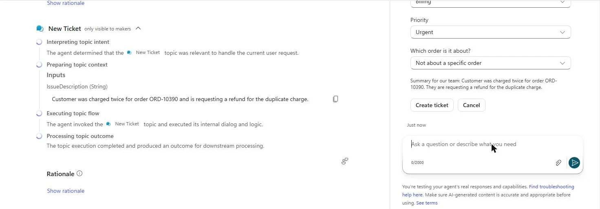
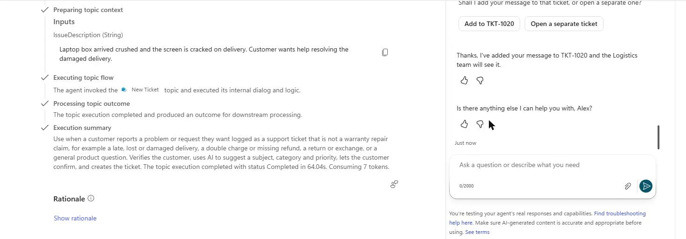
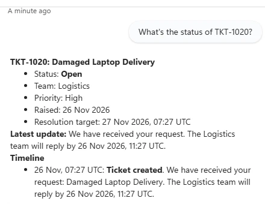
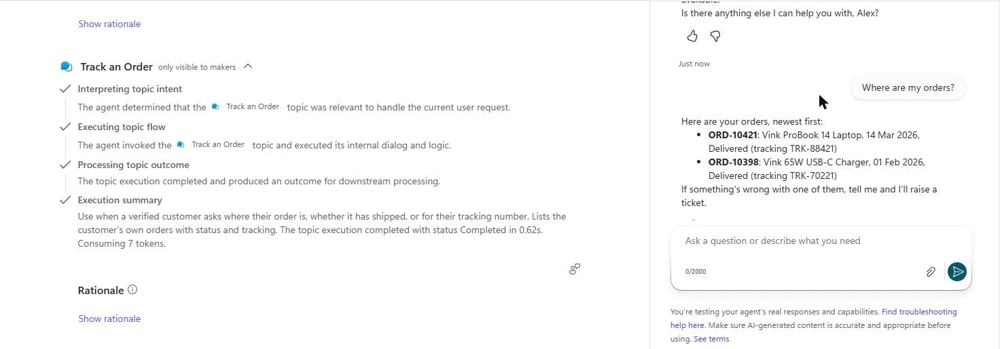
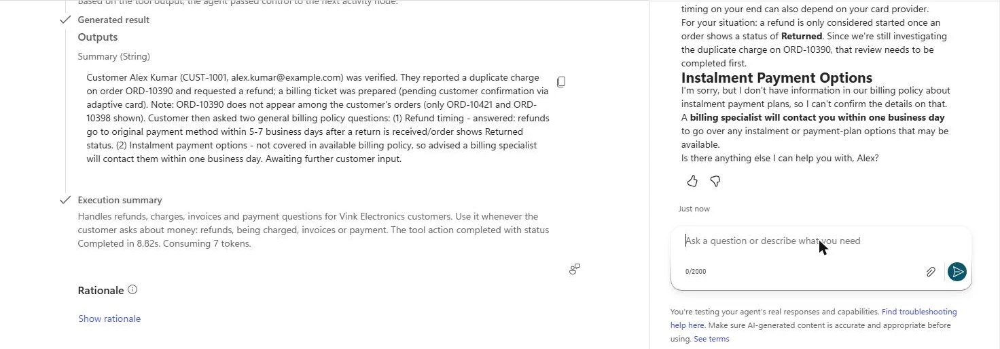
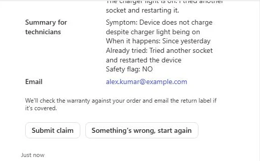
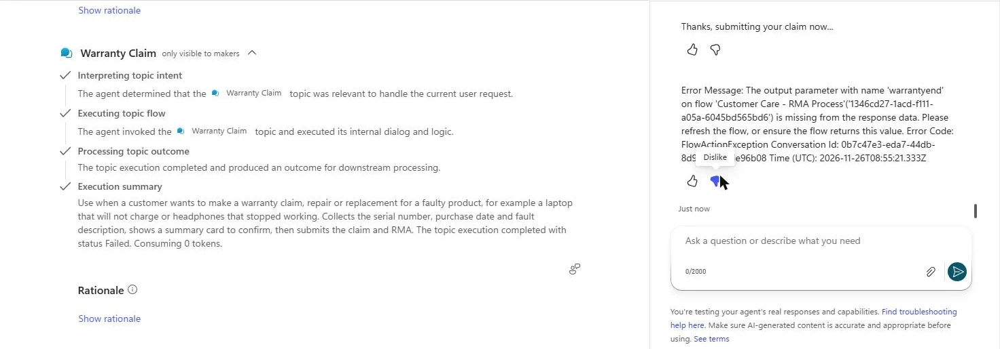
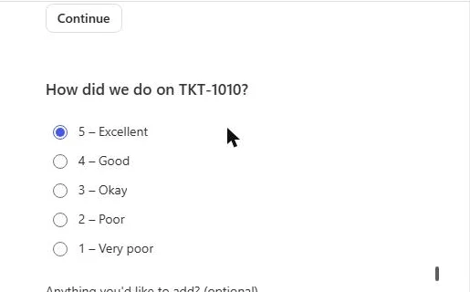
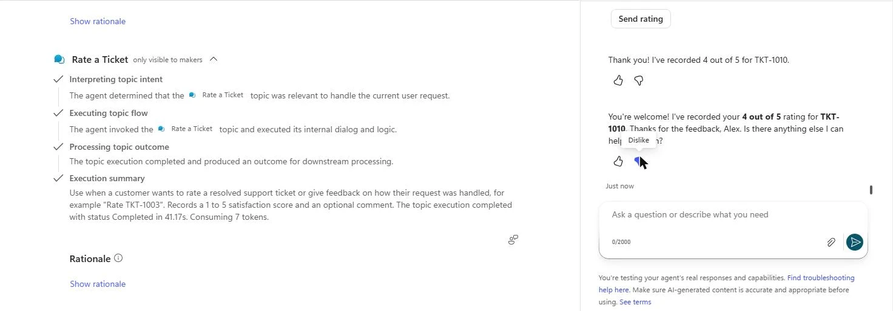
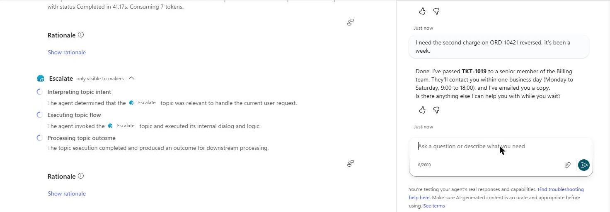

- Technical specification
- Vink Customer Care Agent · Part 8 of 9
8 · Test results
All tests were run on 26 November 2026 in the Copilot Studio test chat against the published agent, as the demo customer Alex Kumar (CUST-1001, fictional). The left side of each screenshot is the test pane's activity map: which topic, tool or agent the orchestrator chose, with inputs, outputs and timings.
| # | Scenario | Path | Result |
|---|---|---|---|
| 1 | New ticket | New Ticket → Triage prompt → Create Ticket | PASS |
| 2 | Duplicate ticket | New Ticket → Create Ticket (duplicate) → Add Customer Reply | PASS |
| 3 | Ticket status | Check Ticket Status → List / Get Ticket Details | PASS |
| 4 | Track orders | Track an Order → List Customer Orders | PASS |
| 5 | Billing question | Orchestrator → Billing child agent | PASS |
| 6 | Warranty claim | Warranty Claim → Fault Summary prompt → RMA Process | FAIL (Known issue 1) |
| 7 | Rate a ticket | Rate a Ticket → List Tickets → Record CSAT | PASS |
| 8 | Escalate | Escalate → List Tickets → Escalate Ticket | PASS |
1 · New ticket
- Steps
- I was charged twice for order ORD-10390, can I get a refund? → email → CUST-1001
- Expected
- Verification first, then a review card with AI-suggested fields
- Actual
- Identify Customer ran, then New Ticket. Triage: Billing / Urgent (money taken twice). Review card shown; cancelled so no ticket was written.
- Result
- PASS

IssueDescription from the message; the card shows the triage result.
2 · Duplicate ticket
- Steps
- New session. My laptop box arrived crushed and the screen is cracked → verify → Create ticket
- Expected
- Create Ticket finds open Delivery ticket TKT-1020 and returns
duplicate = Yes; the topic offers to add to it - Actual
- Triage Delivery / High. Create Ticket returned the duplicate; Add to TKT-1020 called Add Customer Reply. Topic completed in 64 s.
- Result
- PASS


3 · Ticket status
- Steps
- What's the status of TKT-1020?
- Expected
- Status, team, priority, SLA and the customer-visible timeline
- Actual
- Get Ticket Details returned the row and the Ticket created timeline entry written by Ticket Created.
- Result
- PASS

4 · Track orders
- Steps
- Where are my orders?
- Expected
- The verified customer's orders, newest first, with status and tracking
- Actual
- ORD-10421 and ORD-10398 listed with tracking numbers. Topic completed in 0.62 s.
- Result
- PASS

5 · Billing question
- Steps
- How long does a refund take to reach my card, and can I pay in instalments?
- Expected
- Handover to the Billing Agent; policy answer; specialist for anything outside policy
- Actual
- Billing Agent ran (8.82 s): refund timing from policy (5–7 business days after return); instalments not in policy, so a billing specialist will contact within one business day.
- Result
- PASS

6 · Warranty claim
- Steps
- I want to make a warranty claim. My laptop SN-LTP-48213 stopped charging… → purchase date → description → Submit claim
- Expected
- Fault summary card, then claim, RMA and ticket numbers
- Actual
- The SerialNumber entity captured the serial; the Fault Summary prompt produced the four-line summary. On submit:
FlowActionException, outputwarrantyendmissing. The flow had already created the claim and TKT-1021 (Awaiting return). - Result
- FAIL


Lesson: renaming a flow output is a breaking change for every agent that uses the flow. The flow ran, but the agent couldn't bind its response, so the customer saw an error even though the data was written. Refresh tools after any change to a flow's inputs or outputs, and keep the Topic checker at zero errors before publishing.
7 · Rate a ticket
- Steps
- I'd like to rate one of my tickets → TKT-1010 → 4 – Good
- Expected
- Ticket picker, rating card, score saved
- Actual
- Record CSAT saved 4/5 on TKT-1010. The confirmation appeared twice (Known issue 3).
- Result
- PASS (with note)


8 · Escalate
- Steps
- I want to speak to a person about my duplicate charge → TKT-1019 → reason
- Expected
- Ticket set to Escalated, support alerted, customer told who and when
- Actual
- Escalate Ticket set TKT-1019 to Escalated and alerted the support mailbox; the customer was told the Billing team will contact them within one business day.
- Result
- PASS


Background flow runs